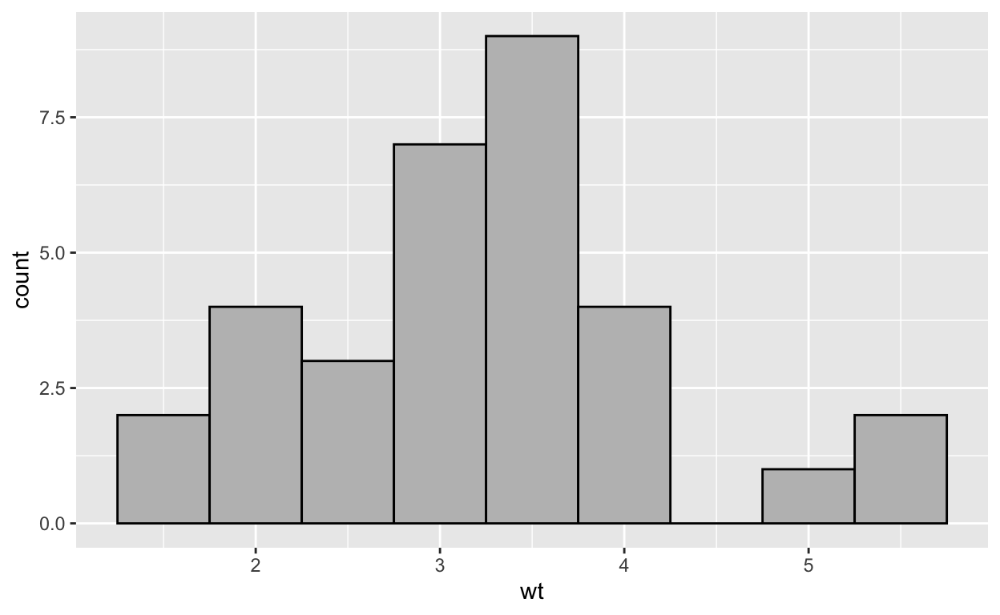
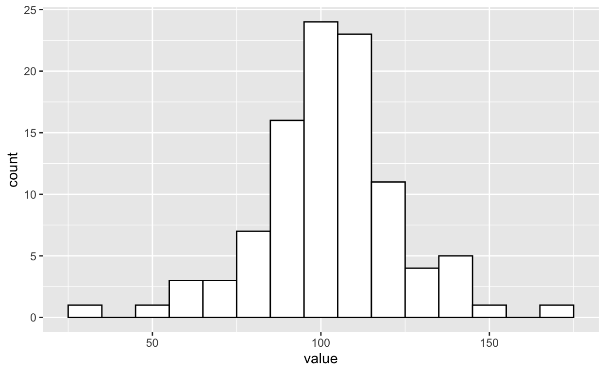
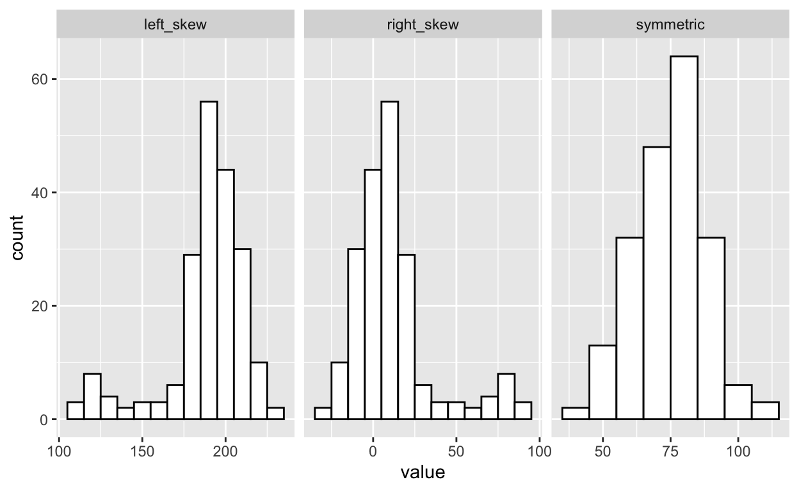

In this tutorial, you will learn about numerical data - when our measurements are represented as quantities.
We will use the following R Commands:
mean()median()select()summarise()max()min()IQR()sd()var()rnorm()geom_histogram()facet_wrap()We will use the following dataset:
mtcars - Motor Trend Car Road Tests, a dataset that comes preloaded in R, containing data about various cars from 1974.# convert mtcars from dataframe to tibble for easier printing
mtcars <- as_tibble(mtcars)
mtcars Let’s start out by discussing numerical data - data with measurements that are represented as quantities.
There are two primary categories of numerical data: - discrete data: data in which there are no intermediate values between two numbers. - continuous data: data in which decimal values allow there to be infinitely many values between two numbers.
The number of children in a household is a common example of discrete data. A household can have 1 or 2 children, but they cannot have 1.5 children.
Temperature is a common example of continuous data. A room can be 70 degrees Fahrenheit, or 70.01 or 70.001…and so on. There are infinitely many values between 70.01 & 70.001. We often “bin” continuous data when visualizing or analyzing it. By that, we mean that we group ranges of values together. For example, we may group all values from 70-75 together when visualizing the daily temperatures experienced in Massachusetts during a summer.
In mtcars, the column wt, which contains the weight of each vehicle (in tons) is a good example of a continuous numerical variable. The column cyl, which contains the number of cylinders in each vehicle’s engine, is a good example of a discrete numerical variable.
Let’s take a look at these two columns.
# selecting wt and cyl to print them
mtcars %>%
select(wt, cyl) The decimal values in wt indicate the continuous nature of the data. There can be a car that weighs 3.01 tons, or 3.001 tons, and so on…On the other hand, cyl is clearly discrete - a car engine cannot have half of a cylinder.
Researchers commonly make a distinction between interval data, which lacks a true zero, and ratio data, which does have a true zero. When data are measured on a ratio scale, a value of 0 indicates a true absence of the quantity being measured. Income is an example of ratio data, as it is possible to earn $0 in a fiscal year. This is not true for interval data. For example, a temperature of 0 degrees Fahrenheit does not indicate the absence of temperature - its position is arbitrary. Therefore, temperature is measured on an interval scale.
There’s one more type of numerical data to discuss: ordinal data. While ordinal, interval, and ratio data are all rank-ordered (i.e., higher values indicate higher amounts of the quantity being measured), ordinal data does not assume equal distance between values. Ordinal data also has no true zero.
For example, you’ve probably filled out a survey where you were asked to rate your satisfaction with a product on a scale from 1-10. While a response of 5 indicates greater satisfaction than a response of 4, there is no way to know if the the difference between 5 and 4 is the same as the difference between 4 and 3. These are convenient values that attempt measure satisfaction approximately but are in no way as precise as measuring temperature with a thermometer. Importantly, there’s no way to know that all processes that generated the observations (e.g., people filing out forms) understand those numbers to mean the same thing.
To summarize:
Ordinal data
Interval data
Ratio data
Now we will discuss computing descriptive statistics for numerical data. Descriptive statistics are exactly what they sound like: statistics that describe our sample. They are numerical summaries that convey basic information about our sample of data.
Central tendency is a statistic that describes the center of a distribution of data. The most common measures are the mean, median, and mode. Let’s start out by discussing the mode.
The mode is the value that is most frequent in a dataset. For example, in the following data, ‘2’ is the most common value, and therefore the mode.
x <- c(1,2,2,2,5,6,3,2,2,1,2,2)R does not have a function for computing the mode, so if we wish to do so, we must write one ourselves.
# function for computing the mode of a vector
# find the index of the mode when a table is created
# then use that index on the original vector to find the mode
compute_mode <- function(x){
mode_index <- which.max(table(x)) # which.max() returns the index of the max value in a vector
mode <- x[mode_index] # use the mode_index to find the mode in the original vector
return(mode)
}
compute_mode(x) # Getting the mode in our original vector## [1] 2The mode is a used less frequently than other measures of central tendency. When data are continuous, it’s unlikely that a single mode will even exist. The mode is best used for categorical data (or occasionally discrete numerical data), so it will not be discussed further in this tutorial.
The arithmetic mean (colloquially referred to as the average) is the sum of all values in a set of data, divided by the number of values in the data.
\(\bar{x}=\frac{\Sigma x_{i}}{N}\)
We use \(\bar{x}\) to refer to a sample mean and \(\mu\) to refer to a population mean. The population is the entire group we wish to learn about (e.g., all registered voters in America), whereas the sample is the subset of that group that we measure in an attempt to learn about the population (e.g., a sample of 200 registered voters that respond to our survey).
Let’s compute the mean weight of the cars in the mtcars dataset.
# Base R method
# sum adds up all the values, and length gives us the total number of values in the vector
sum(mtcars$wt)/length(mtcars$wt) ## [1] 3.21725# Tidyverse method - same operations, but using dplyr syntax
select(mtcars, wt) %>%
summarise(mean_weight=sum(.)/n()) # sum(.) adds up everything in wt, n() returns the number of observationsHowever, there’s an easier way to do it in R. Rather than compute it ourselves, we can have R do it for us using the built-in function mean().
# Base R method
mean(mtcars$wt) ## [1] 3.21725# Tidyverse method
mtcars %>%
summarise(mean_weight=mean(wt)) The mean isn’t the only statistic we can use to describe central tendency. We can also compute the median, which is the center-most value when all values in the dataset are arranged in order. For example, in the vector x <- c(1,3,5,6,7), the number in the middle is 5, so the median is 5.
Averaging the two center-most values is one way of computing the median. For example, in the vector y <- c(1,1,2,3,5,6), both 2 & 3 are the center-most values, so the median is the average of 2 & 3 (2.5).
We can also use a convenience function in R to compute the median, (i.e., median()).
# Base R
median(mtcars$wt)## [1] 3.325# Tidyverse
mtcars %>%
summarise(median_wt=median(wt))Notice that the median and the mean are very similar here. The mean car weight is 3.21725 tons, while the median car weight is 3.325. This is because the data are not particularly skewed here. We can verify this with a histogram of the car weights.
# using ggplot to create histogram
ggplot(mtcars, aes(wt))+ # wt on the x-axis
geom_histogram(binwidth = .5,col='black',fill='gray') # changed more binwidth to be more appropriate
But what exactly does “skew” mean? For this, we’ll need to go into more detail about visualizing numerical data.
Given this sample dataset data_1, use a pipe (%>%) and summarise() to compute the mean and median of the variable value.
data_1# use summarise to compute mean and mediandata_1 %>%
summarise(
mean=mean(value),
median=median(value)
)# ADVANCED - Feel free to ignore this code block!
set.seed(230344)
n <- 200
symmetric <- rnorm(n, 75, 15)
right_skew <- symmetric - c(rep(0,10),rep(70,180),rep(0,10))
left_skew <- abs(200-right_skew)
sample_data <- tibble(
symmetric=symmetric,
right_skew=right_skew,
left_skew=left_skew
) %>%
pivot_longer(
cols=c(symmetric,right_skew,left_skew),
names_to = "distribution",
values_to = "value"
) Researchers often like to create histograms after collecting data measured on a continuous scale. Histograms “bin” values - group values within specific ranges together - and show the frequency with which each bin occurs. Here’s an example, using randomly sampled data.
# setting the seed can be useful for reproducing code results when simulation is involved
set.seed(10000)
data <- tibble(
value=rnorm(100,100,20) # randomly sample 100 values from a normal distribution w/ mean 100 and sd 20
)
ggplot(data, aes(x=value))+ # ggplot with 'value' on the x axis
geom_histogram(binwidth = 10,col='black',fill='white') # changed binwidth to a more appropriate value
We randomly sample data from a normal distribution with a mean of 20 and a standard deviation of 15. Then, we create a histogram from these data, with a bin width of 10. This indicates that each bar spans 10 values. We then see the frequency with which each bin occurs. The bin centered around 100 has the highest count, which makes sense because we sampled from a distribution with a mean of 100.
There’s one other crucial thing to point out about this data: it’s (approximately) symmetrical. That is to say, there’s essentially an equal amount of data on either side of the mean.
However, sometimes our data will be skewed. By this we mean, there is a long “tail” of values on one side of the distribution that can affect the way we interpret and summarize our data.
Below are examples of symmetric, left, and right-skewed data.

Looking at our left-skewed data, we see a long tail going out to the left. On the other hand, when we look at our right-skewed data, we see a long tail going out to the right. Finally, the symmetric data is (approximately) the same on either side.Let’s see how this affects our calculation of the mean and median.
sample_data %>%
group_by(distribution) %>% # use 'distribution' (symmetric, right_skew, and left_skew) as grouping variable
summarise(
mean=mean(value), # compute mean
median=median(value) # compute median
)Our summarized data can be used to show how skew affects the mean and median. The symmetric distribution has a mean and median that are nearly identical. On the other hand, the left and right-skewed distributions show some discrepancies between mean and median.
When we look at the right skewed histogram, the center of the data appears to be somewhere around 5-7, which the median confirms. However, the mean is actually much higher, with a value of 12. This is because the skewed values “pull” the mean away from we might think to be the center of the data. If we had blindly calculated the mean without taking a look at our data, we would have come away with a much different idea of the data’s central tendency.
The same thing occurs with our left-skewed data. The median is 193, while the mean (188) is pulled towards the longer left tail.
To summarise: it’s crucial to visually examine your data. If your data exhibits any sort of skew, it’s best to use the median as a measure of central tendency. Otherwise, the mean is usually preferred.
Now that we’ve discussed measures of central tendency, we must also discuss measures of variability. Variability generally refers to how different the values in our data are from one another. The first measure of variability is range.
Range is simply the maximum value in the dataset minus the minimum value in the dataset.
\(Range=Max-Min\)
Going back to mtcars, the range of wt is calculated as follows:
# base R method
max(mtcars$wt)-min(mtcars$wt) # can use max() and min() of wt to compute range## [1] 3.911# Tidyverse method
mtcars %>%
summarise(
range_wt=max(wt)-min(wt) # can use max() and min() of wt to compute range
)You’ve probably learned about quantiles before (also known as percentiles). IQR is simply the range from the 25th quantile to the 75th quantile.
\(IQR = 75th Percentile - 25th Percentile\)
We can compute it easily in R using the IQR() function:
# Base R method
IQR(mtcars$wt) ## [1] 1.02875# tidyverse method
mtcars %>%
summarise(
iqr_wt=IQR(wt)
)Standard deviation is a more complex measure of variability, but one that’s far more common in practice than Range or IQR. Standard deviation is essentially the square root of the sum of squared deviations from the mean divided by the sample size. We use the \(\sigma\) (sigma) symbol for the population standard deviation (which is usually unknown), and \(\hat{\sigma}\) (sigma hat) for the sample standard deviation (which is what we must typically estimate as researchers).
\(\hat{\sigma} = \sqrt{\frac{\Sigma(x_{i}-\bar{x})^2}{N}}\)
We use \(\hat{\sigma}\) to refer to a sample standard deviation and \(\sigma\) to refer to a population standard deviation.
Standard deviation is best interpreted using the 68-95-99.7 rule - given the assumption that our data are normally distributed, 68% of our data will fall within 1 standard deviation of the mean, 95% of our data will fall within 2 standard deviations of the mean, and 99.7% of our data will fall within 3 standard deviations of the mean.
Standard deviation can be computed in R using the sd() function.
# Base R method
sd(mtcars$wt)## [1] 0.9784574# Tidyverse method
mtcars %>%
summarise(
sd_wt=sd(wt)
)The last measure of variability is variance. Variance is simply the sum of squared deviations from the mean divided by sample size. In other words, it is the same as standard deviation but without the square root. We use \(\sigma^{2}\) to indicate population variance and \(\hat{\sigma^{2}}\) to indicate sample variance.
\(\hat{\sigma^{2}} = \frac{\Sigma(x_{i}-\bar{x})^2}{N}\)
While variance is crucial for many mathematical aspects of statistics (which you will learn more about in the future), standard deviation is often much easier to interpret.
Variance can be computed in R using the var() function.
# Base R method
var(mtcars$wt)## [1] 0.957379# Tidyverse method
mtcars %>%
summarise(
var_wt=var(wt)
)Again using data_1, compute the variance and standard deviation of value using summarise().
data_1# use summarise to compute sd and variancedata_1 %>%
summarise(
sd=sd(value),
var=var(value)
)You have now learned about types of numerical data, visualizing numerical data, and ways to measure central tendency and variability in numerical data.
Navarro, D. J. (2015). Learning Statistics with R: A Tutorial for Psychology Students and Other Beginners, Version 0.6.